CellROX (cytosolic ROS) and MitoSOX (mitochondrial superoxide) images from Caco-2 cells treated with 2-ethylhexanoic acid (2-EHA) were analysed cell by cell. Cellpose, a deep-learning segmentation model, outlines each cell. Fluorescence is then measured inside every cell and divided by the number of cells, instead of being read from a whole field.
Measuring each cell in ImageJ meant drawing or thresholding cell by cell. With 4 time points, 10+ conditions and several fields each, this was hundreds of images and could not be done consistently.
Cells pile up and touch, so a simple threshold (or ImageJ watershed) merges neighbours into one object. Cellpose was trained to split touching cells and handles colonies much better.
Cellpose (Stringer et al., Nat Methods 2021) predicts, for every pixel, the direction toward the centre of its cell, and follows those directions to separate cells that touch. The analysis runs on all images at once with one fixed setting.
Exp4, 72 h, 1 mM 2-EHA, field 1 (EVOS 40×, raw 12-bit file).
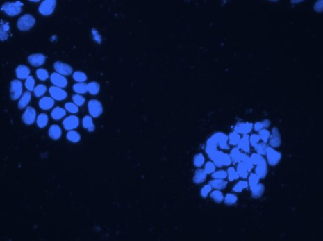
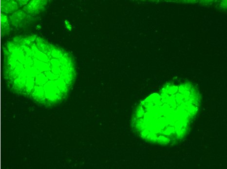
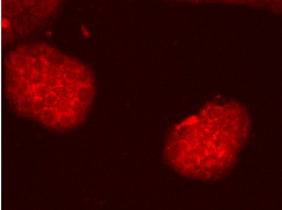
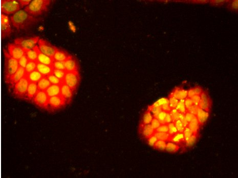
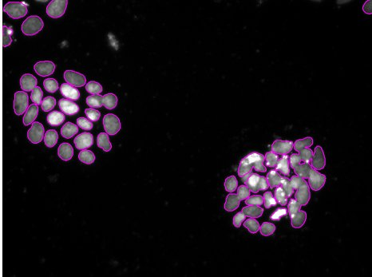
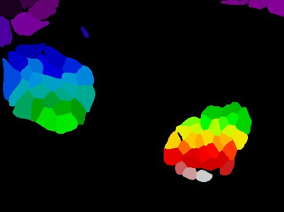
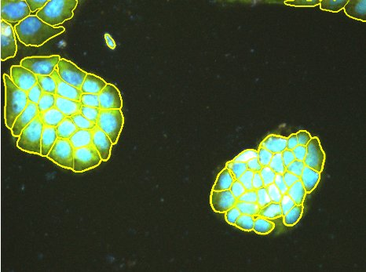
cell = mean(signal in cell) − background
field = Σ cells ÷ number of cells
fold = field ÷ DMSO (same time)
Each dot is one image field, shown as fold of DMSO at the same time point. Bars are mean ± SD. Hollow points are Exp4 fields with more than 1% saturated pixels; their true value is at least as high as shown.
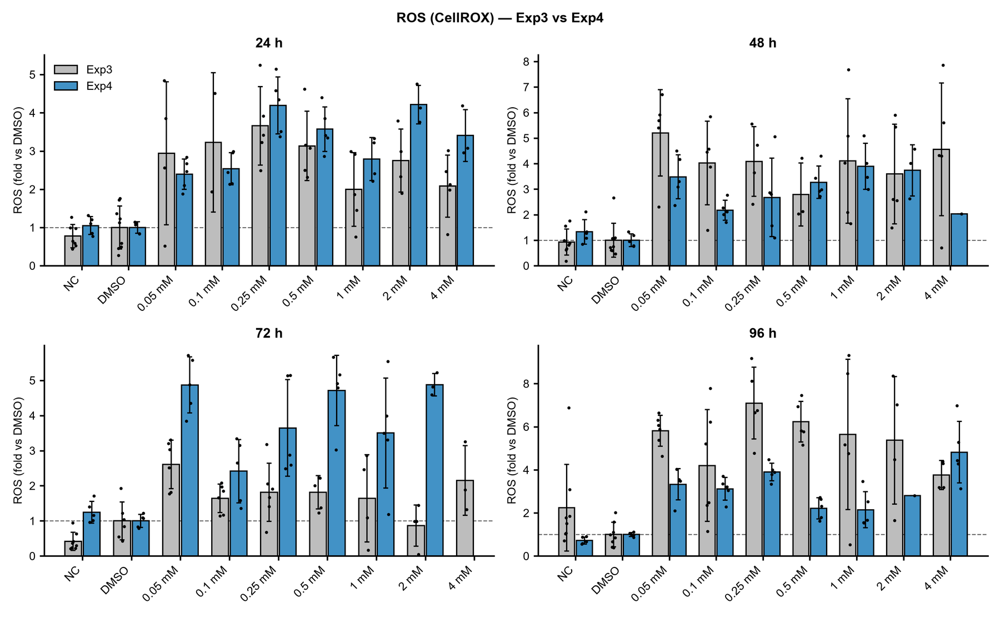
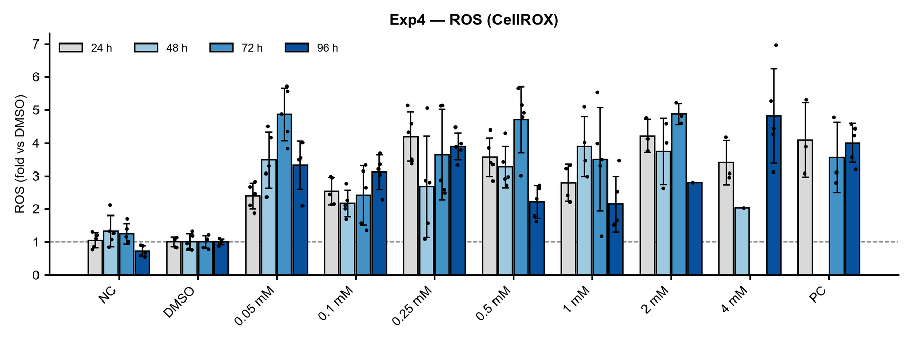
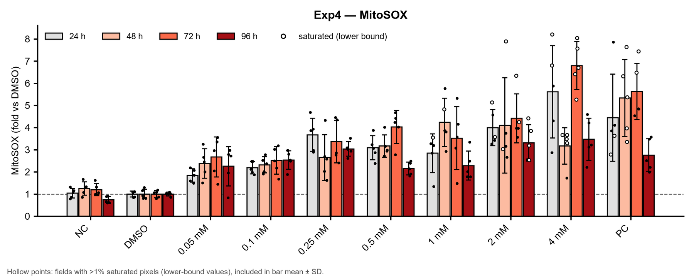
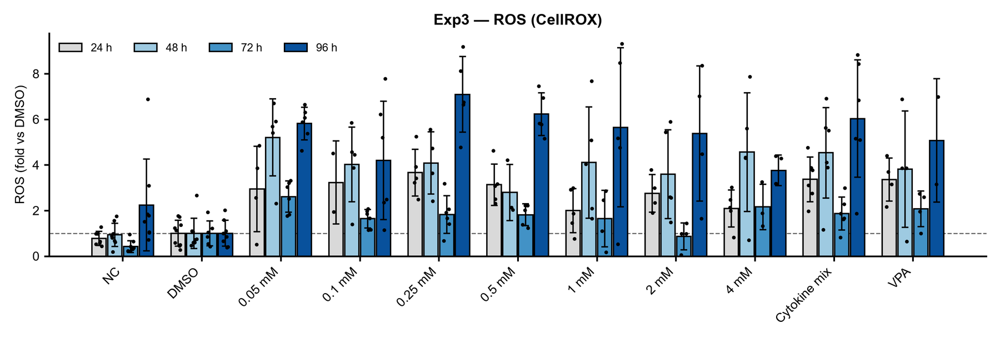
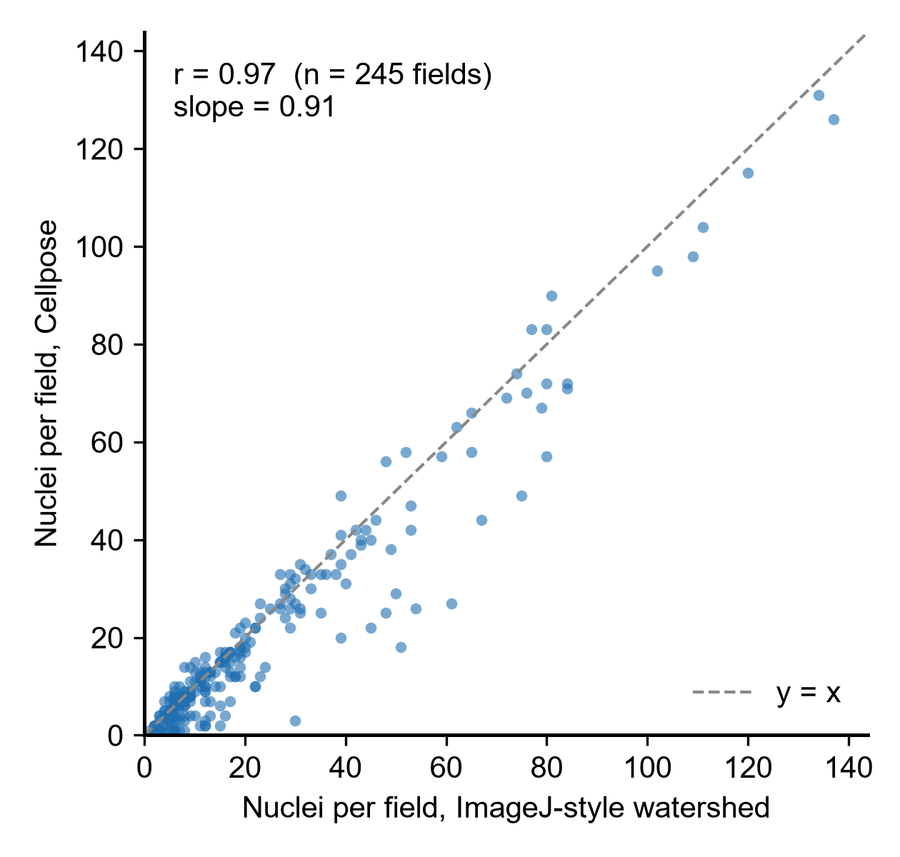
Nuclei counted per field by Cellpose (y) and by ImageJ-style threshold + watershed (x) on the same Exp3 images: r = 0.97. Cellpose gives the same answer as the established method, but runs on hundreds of images without manual steps.
Segmentation does not depend on how bright ROS is in each cell, so dim cells are not dropped and the comparison between doses is not biased.
Exp4 was measured on the raw 12-bit files and divided by exposure time. Brightness-adjusted figure images were never measured.
The same model and parameters were used for every condition, time point and field, with no per-image tuning.
Saturated pixels are counted for every field. Exp4 fields above 1% are shown as hollow points: their real signal can only be higher, so the dose effect is, if anything, underestimated.
A QC overlay and the mask file are saved for each field. Fields where Cellpose covered less than half of the stained area were left out of the per-cell values.
Values are averaged per cell, so a field with more cells does not look brighter just because it is more crowded.
from cellpose import models
import numpy as np
from skimage import measure
model = models.CellposeModel(gpu=True) # Cellpose 4, cpsam
img = np.stack([norm(ros + mitosox), norm(dapi), zeros], -1)
cells = model.eval(img, flow_threshold=0.4, cellprob_threshold=0.0)[0]
bg = np.median(ros[far_from_cells]) # background per image
per_cell = [(ros[cells == r.label].mean() - bg) / exposure_s
for r in measure.regionprops(cells)]
field_value = np.mean(per_cell) # signal per cell
fold = field_value / dmso_mean_same_time